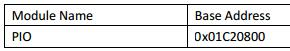
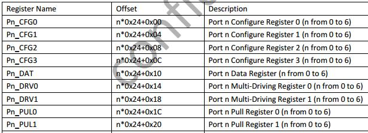
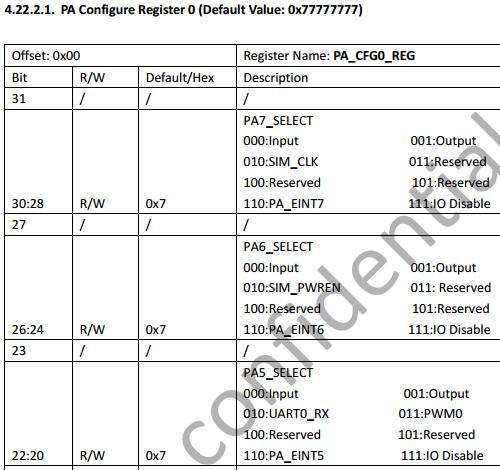
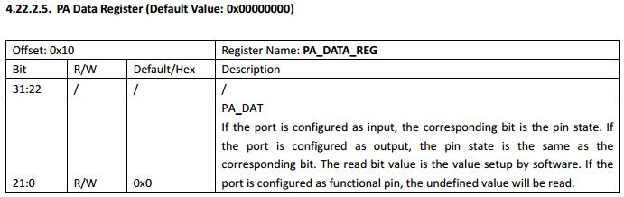
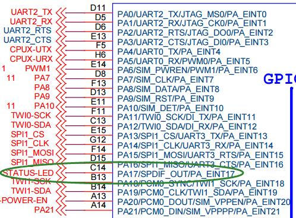
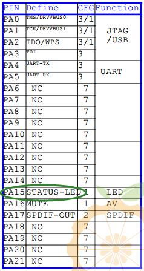
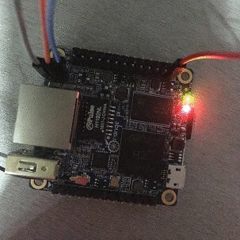

这个名字真不知道怎么取，因为要表达的信息太多了。先让我表达一下此刻的心情——我好激动！！！！我终于能够克服心里障碍，会自己看处理器的手册，并编写代码操作硬件了！
先来说一下硬件环境和这篇文章的来由。我在看《Linux Device Driver》一书，看完了中断处理，就想自己来试一试。本来想着，可以直接用Linux提供的GPIO子系统来监听引脚上的电平变化，作为中断源。可是呢，Orange Pi居然没有现成的GPIO子系统！或许是我姿势不对，不过按照网上的方法，就是没法通过/sys/class/gpio目录下的文件来读写GPIO。这把我逼急了，我就想着，趁着这个机会研究一下如何直接和硬件打交道。操作硬件嘛，无非就是读写寄存器咯。读写寄存器嘛，可以直接通过读写内存地址的方式来读写。我知道很简单！然而道理我都懂，就是做不到。为啥？因为我对这么底层的东西一直有一种恐惧。一方面是从来没有在Linux上读写过寄存器，另一方面是看到600多页的芯片手册就望而却步。不过呢，随着之前通过I2C子系统操作过ADXL345，我已经对硬件不是那么害怕了（更何况我用单片机操作硬件非常溜啊）。而如今又把大半本《Linux Device Driver》英文版啃完了，还怕英语资料？于是我毅然决定——怼死他！本来呢，我想在Linux驱动程序中实现对GPIO寄存器的读写的，但是后来看别人的博客，发现可以使用mmap直接把一段物理地址映射到用户空间，就能在用户态读写了。想想调试用户态程序方便得多，我就先试试用户态吧～
本文封装了一个在全志H3（包括H3的阉割版H2+）处理器上操作GPIO的函数库。不过呢，只实现了最基本的读写逻辑电平，并没有完全发挥H3的GPIO的能力（比如上拉下拉电阻）。不过对于理解如果在用户态通过内存映射（mmap）操作寄存器已经绰绰有余了。
================阶段一：H3的GPIO寄存器==============
首先肯定是要来看一下H3的GPIO寄存器的分布和功能位。从Allwinner_H3_Datasheet_V1.2.pdf的316页开始就是介绍GPIO寄存器了。首先看到的就是一个非常重要的信息——GPIO的基址是0x01C20800：

接下来就是每一个端口的寄存器排布。对于每一个端口，总共有9个寄存器：

以第0个端口为例，那么它就有P0_CFG0、P0_CFG1、P0_CFG2、P0_CFG3、P0_DAT、P0_DRV0、P0_DRV1、P0_PUL0和P0_PUL1这么九个寄存器。这九个寄存器的地址相对于0x01C20800的偏移量分布是0x00、0x04、0x08，以此类推。比如我们想操作P3_DAT寄存器，那么它的物理地址就是0x01C20800+3*0x24+0x10。很简单吧～
那么每个寄存器是什么功能呢？这个就要继续往下看。在317页，有关于PA_CFG0的描述。哦对了，这里估计是文档的失误，P0就是PA，P1就是PB，以此类推。

可以看到，PA_CFG0的每四个位（三位有效+一位无效）控制一个引脚的工作方式，于是PA_CFG0能够控制32/4=8个引脚，分别是PA0~PA7。那么还有PA_CFG1、PA_CFG2等等，就是控制A端口其他引脚的工作方式。
能够设置工作方式之后，就需要读写电平了。往下看，看到PA Data Register，可以发现PA_DAT非常简单，第i位就代表第i个引脚的电平。如果工作方式是输出，那么就写那一位，如果是读，就读取那一位。

至此就能读写GPIO电位了。
===============阶段二：Linux用户态读写物理地址==============
现代的处理器对于外设的操作基本都是通过内存映射的方式，也就是把外设的寄存器映射到某个内存地址上，读写该地址就是在读写寄存器。现在知道了要操作的寄存器的地址，比如要操作0x01C21000，那么是不是就直接把0x01C21000赋值给一个指针，然后读写呢？在没有虚拟内存的情况下确实是这样的。但是有了虚拟内存后，用户态中的地址0x01C21000并不是物理地址，而是虚拟地址，它具体对应物理地址的哪里，根本不知道，甚至根本就没有对应的物理地址。要在用户态直接操作物理地址，必须先进行内存映射，也就是mmap，把一段虚拟地址和一段物理地址对应起来。
来看一下mmap的函数原型：
void* mmap(void* start,size_t length,int prot,int flags,int fd,off_t offset);
参数start是用户指定的映射区的开始地址，设置为0时表示由系统决定映射区的起始地址；
参数为length要映射的长度，以字节为单位；
参数prot为权限相关的参数，可以是PROT_EXEC（映射区域可被执行）、PROT_READ（映射区域可被读取）、PROT_WRITE（映射区域可被写入）及它们的合理组合，或者是PROT_NONE（映射区域不能存取）；
参数flag影响映射区域的各种特性。在调用mmap()时必须要指定MAP_SHARED 或MAP_PRIVATE。具体如下：
| MAP_FIXED | 如果参数start所指的地址无法成功建立映射时，则放弃映射，不对地址做修正。通常不鼓励用此旗标 |
| MAP_SHARED | 对映射区域的写入数据会复制回文件内，而且允许其他映射该文件的进程共享， 原来的文件会改变 |
| MAP_PRIVATE | 对映射区域的写入操作会产生一个映射文件的复制，即私人的“写入时复制”（copy on write）对此区域作的任何修改都不会写回原来的文件内容。当共享的对象的虚拟存储区域为私有对象时， 修改只会被本进程中改变 |
| MAP_ANONYMOUS | 建立匿名映射。此时会忽略参数fd，不涉及文件，而且映射区域无法和其他进程共享 |
| MAP_DENYWRITE | 只允许对映射区域的写入操作，其他对文件直接写入的操作将会被拒绝 |
| MAP_LOCKED | 将映射区域锁定住，这表示该区域不会被置换（swap） |
参数fd是被映射的文件描述符。
参数offset是指映射区域的首地址相对于文件开头的偏移量，必须是一个内存页大小的整数倍。
啥？文件？What happened？一开始我也一脸懵逼。。。都是内存操作，怎么就出现了文件的概念？
后来才感受到Linux强大到可怕，才意识到Unix先驱们的深谋远虑。mmap()最初是为了解决文件随机读写的问题的。比如我有一个大文件，我想修改其中某几个字节。如果把文件当做一个流，那么必须全部读出来，修改几个字节，再全部写回去，代价非常大！如果能够把文件当做一个块设备，就像内存一样，可以只读写其中几个字节，那么效率就会非常高。于是mmap()诞生了！mmap()把文件中的某一块映射到内存中，然后程序就可以像读写内存一样操作文件了～我想很多数据库系统就是这么实现的吧！
那么mmap()又和物理内存有什么关系呢？确实没有关系，如果“/dev/mem”这个设备文件不存在的话～～～～Linux开发者发现，如果把整个物理内存看做一个文件，那么就能够使用mmap()把物理内存中的某一段映射到虚拟内存中，然后读写！哇塞，这样应用程序就能操作硬件了！这就是用户态驱动程序兴起的技术基础！
比如我想读写物理地址为0x01C21000的那个字节，那么就这样：
int fd=open("/dev/mem",O_RDWR);
if(fd<0)
return 1;
void* ptr=mmap(0,1,PROT_READ|PROT_WRITE,MAP_SHARED,fd,0x01C21000);
if(ptr==MAP_FAILED)
return 1;
*ptr=0x1234;
先打开”/dev/mem”设备文件，然后通过mmap映射到虚拟空间，就可以直接使用指针读写啦～
不过需要注意一点！mmap()的offset参数必须是内存页大小的整数倍。在大多数架构上，页大小是4096字节，刚好能够整除0x01C21000。如果我们是要映射0x01C21234，那么就得这样了：
int fd=open("/dev/mem",O_RDWR);
if(fd<0)
return 1;
void* map_addr=mmap(0,0x234+1,PROT_READ|PROT_WRITE,MAP_SHARED,fd,0x01C21000);
if(map_addr==MAP_FAILED)
return 1;
void* ptr=map_addr+0x234;
*ptr=0x1234;
也就是说把余数加到虚拟地址上。
另外说明两点：一、如果映射的长度不足一页，就按一页处理；二、为了保险起见，不要假定页大小就是4096，而要使用
uint32_t page_size=sysconf(_SC_PAGESIZE);
来获取页大小。
最后还有！mmap()之后，其实就可以关闭fd了，因为映射关系已经维持，直到调用munmap。
=================阶段三：代码实现================
首先是头文件：
allwinner_h3_gpio.h
#ifndef ALLWINNER_H3_GPIO #define ALLWINNER_H3_GPIO //端口数量 #define GPIO_MAX_PORT_COUNT 7 //GPIO工作方式 #define GPIO_IN 0x00 #define GPIO_OUT 0x01 #define GPIO_DISABLE 0x07 //初始化 int gpio_init(); //设置工作方式，port表示端口，取值为'A'~'G',pin表示引脚，mode为GPIO_IN、GPIO_OUT或GPIO_DISABLE void gpio_set_mode(char port,int pin,int mode); //读取引脚的电平 int gpio_get_value(char port,int pin); //设置引脚的电平 void gpio_set_value(char port,int pin,int value); #endif
然后是实现：
allwinner_h3_gpio.c
#include "allwinner_h3_gpio.h"
#include <unistd.h>
#include <stdint.h>
#include <stdio.h>
#include <fcntl.h>
#include <sys/mman.h>
//一个端口的数据结构
typedef struct
{
//工作方式寄存器
uint32_t cfg[4];
//数据寄存器
uint32_t dat;
//占4字节，暂时不用
uint32_t no_used[4];
}
port_t;
//基地址
#define BASE_ADDR 0x01C20800
//要映射的内存大小
#define MEM_AREA_SIZE (GPIO_MAX_PORT_COUNT*sizeof(port_t))
//port_t数组指针
static port_t* ports=0;
int gpio_init()
{
//避免重复初始化
if(ports!=0)
{
printf("inited already\n");
return 1;
}
//打开/dev/mem
int fd=open("/dev/mem",O_RDWR);
if(fd==-1)
{
perror("open '/dev/mem' failed\n");
return 1;
}
//获取页大小
uint32_t page_size=sysconf(_SC_PAGESIZE);
//计算基址相对于页大小的余数，也就是mmap结果之上的偏移量
uint32_t offset=BASE_ADDR%page_size;
//映射到物理地址
void* map_addr=mmap(0,MEM_AREA_SIZE,PROT_READ|PROT_WRITE,MAP_SHARED,fd,BASE_ADDR-offset);
//映射失败
if(map_addr==MAP_FAILED)
{
perror("mmap failed!\n");
close(fd);
return 1;
}
//可以关闭/dev/mem，对映射关系没有影响
close(fd);
//把数组首地址指过去，此时就指向了第一个端口的第一个寄存器
ports=(port_t*)(map_addr+offset);
return 0;
}
//辅助函数，检查参数，如果合法就找到对应的端口
static port_t* checkAndGetGPIO(char port,int pin)
{
//避免未初始化
if(ports==0)
{
printf("not inited yet!\n");
return 0;
}
//得到端口编号
int port_index=port-'A';
//检查端口编号
if(port_index<0||port_index>=GPIO_MAX_PORT_COUNT)
{
printf("no such port '%c'!\n",port);
return 0;
}
//检查引脚编号
if(pin<0||pin>=32)
{
printf("no such pin '%d'!\n",pin);
return 0;
}
//返回对应编号的端口
return ports+port_index;
}
void gpio_set_mode(char port,int pin,int mode)
{
//获取端口
port_t* pport=checkAndGetGPIO(port,pin);
if(pport==0)
return;
//指向对应的cfg寄存器；因为每个cfg寄存器可以控制8个引脚，所以是第pin/8个cfg寄存器
uint32_t* cfg=&(pport->cfg[pin/8]);
//掩码的左移位数
int shift=(pin%8)*4;
//把cfg寄存器对应的4位清空
*cfg&=~(((uint32_t)0x0f)<<shift);
//把cfg寄存器对应的4位清空设置为mode的低4位
*cfg|=((uint32_t)(mode&0x0f))<<shift;
}
int gpio_get_value(char port,int pin)
{
//获取端口
port_t* pport=checkAndGetGPIO(port,pin);
if(pport==0)
return -1;
//从dat寄存器中读取对应的位
return (pport->dat&(((uint32_t)1)<<pin))>0;
}
void gpio_set_value(char port,int pin,int value)
{
//获取端口
port_t* pport=checkAndGetGPIO(port,pin);
if(pport==0)
return;
//如果为1，就把那一位置位，否则清0
if(value==1)
pport->dat|=((uint32_t)1)<<pin;
else
pport->dat&=~(((uint32_t)1)<<pin);
}
很简单吧～
=================阶段四：测试=================
可以写这么一个测试程序：
#include "allwinner_h3_gpio.h"
#include <unistd.h>
#include <stdio.h>
//PA17是Orange Pi Zero自带的一个红色LED
#define STATUS_LED 17
int main()
{
gpio_init();
gpio_set_mode('A',STATUS_LED,GPIO_OUT);
while(1)
{
gpio_set_value('A',STATUS_LED,1);
usleep(100000);
printf("%d\n",gpio_get_value('A',STATUS_LED));
gpio_set_value('A',STATUS_LED,0);
usleep(100000);
printf("%d\n",gpio_get_value('A',STATUS_LED));
}
return 0;
}
你问我怎么知道自带的LED连接的是PA17？那就要看orange_pi-zero-v1_11.pdf中第6页中GPIO与CPU的连接图了：

当然，还需要再看LED的接法：

因此，PA17输出1时LED亮，输出0时LED灭。
不过呢，需要说明的是，orange_pi-zero-v1_11.pdf第4页那个GPIO分配图有问题！

它说STATUS_LED接在PA15上，差点坑死我，我最后才发现原来是文档错了！
运行后，会发现Orange Pi Zero上一个红色的小灯会不断闪烁，控制台不断输出1,0,1,0…：
